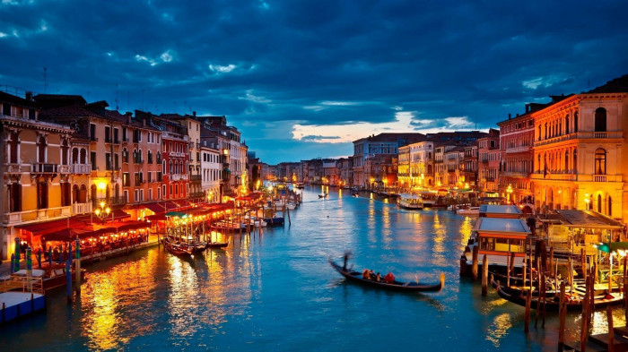

A Cidade Luz, como é conhecida, é famosa por sua arquitetura impressionante, culinária requintada e uma
atmosfera
romântica inigualável. Não deixe de visitar a Torre Eiffel, o Museu do Louvre e o encantador bairro de
Montmartre.
Veneza, Itália

Veneza é uma cidade única, construída sobre a água e cruzada por uma intrincada rede de canais. Passeie de
gôndola pelos canais pitorescos, explore a Praça de São Marcos e prove os deliciosos pratos da cozinha
italiana.